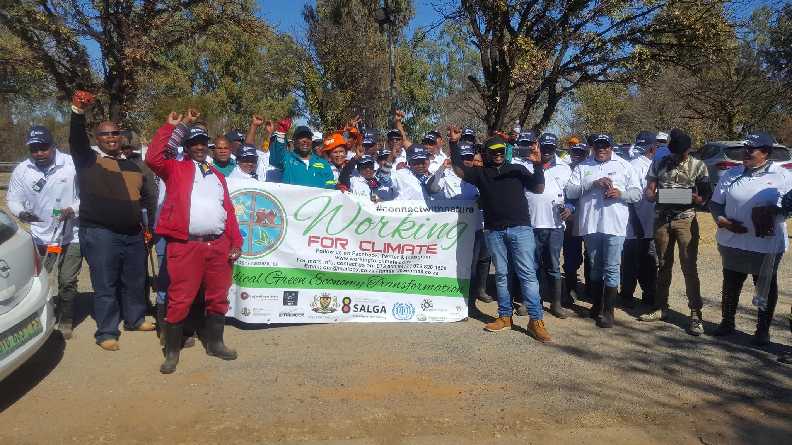

Green Economy Initiatives

The radical green economy initiatives deals with systems of economic activities related to the production,
distribution and consumption of goods and services that results in improved human wellbeing over long term
while not exposing future generation to significant environmental risks or ecological scarcities.
Tlhabollo ya tikoloho.
With the aim and objective to reduce the amount of waste that end up in our landfills. Develop a green
industrial buyback centre, turning waste into to use/products or energy for example paving bricks, roofing
tiles, etc.
Mission of Initiatives include
-
Coordinate a Mass Cleanup campaigns.
-
Declare War on leaks (Saving Water Campaign).
-
Horticulture (Tree Planting, Schools & home back yard gardens).
-
Host Free State Green EXPO, Green School’s Competition, and Green Schools Awards.
-
Green Jobs “Introduce recycle and earn” - train people, on fulltime and part time on green
industrial initiatives.
-
Environmental Education Campaigns: Educate Community and Schools about climate change,
mitigation and adaptation methods.
To achieve progress we need:
-
Progress cannot be achieved without strong partnerships with other departments, and work occurs across
policy, planning and implementation levels
-
At planning level department working to ensure that climate change should prioritise, include discussions
about the country's energy mix
-
To support adaptation planning, the Long Term Adaptation Scenerios project produce a series of impact
assessments for particular sectors, establish priority interventions, and identify responses that require
co-ordination across different sectors
-
Detailed work should now be done on areas that are particularly vulnerable. Adaptation should also include
one of the country's contributions under the new climate change agreement that is being negotiated
-
With regards to mitigation, the intention is ultimately to develop a set of emission reduction pathways.
Emission reduction will be achieved through a range of tools, including treasury's carbon tax and mitigation
plans for sectors and sub-sectors